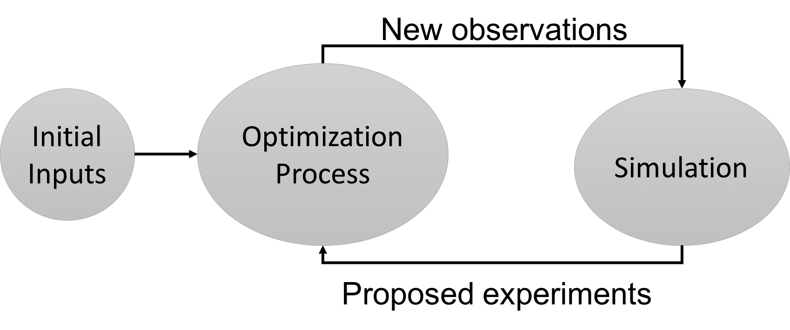

Welcome to SMOOT, the Stochastic Multi-Objective Optimization Tool. This application will help you perform optimization over an unknown system f, with some given observations of inputs x and outputs y as shown:
The tool is designed to operate in two steps: the initial phase is established to input initial observations and the second phase is built to iteratively input new results from the suggested experiments.
At the beginning, initial observations are uploaded to the tool. The result of the optimization process determines what new experiment should be performed. Once the new experiment is executed, it is uploaded to the tool in order to perform a new simulation. Consequently, the tool will propose another experiment. This process is described in the following diagram.
